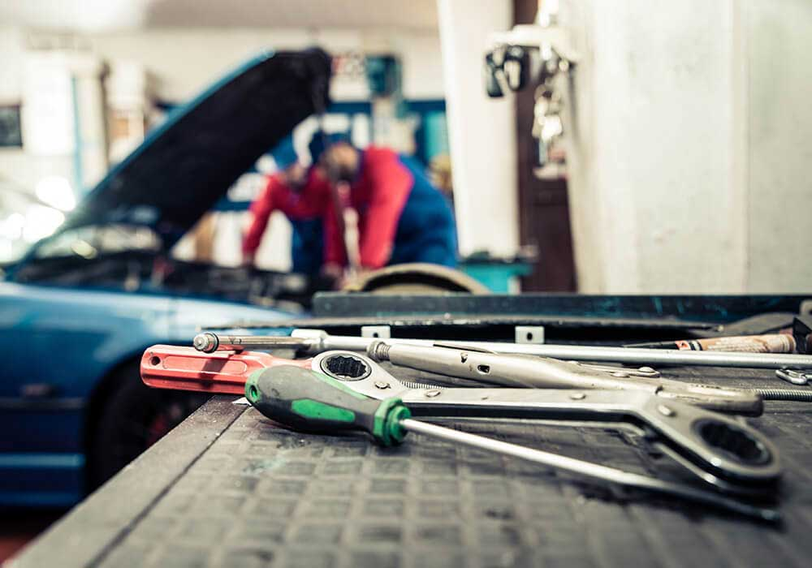
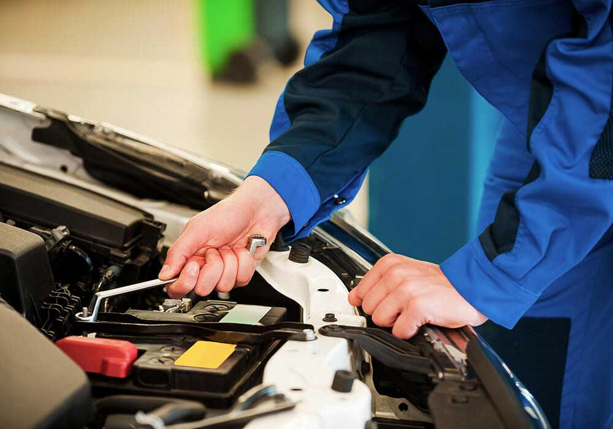

Oil and filter changes
Factory-scheduled maintenance and oil service.
Complete car care at affordable rates
B&B Complete Auto Repair is the one-stop auto repair shop you need, providing a complete range of car care services at affordable rates.
Fully equipped for maintenance and repair on all makes and models, foreign or domestic.
Factory-scheduled maintenance and oil service.
Cooling system repair and inspection.
Auto body services and collision repair.
Auto glass repair and replacement.
Brake check and repair.
Exhaust system repair.
Transmission repair and rebuild.
Engine diagnostics and repair.
Tire services, rotation, and wheel alignment.
Check-engine light diagnostics and computer diagnostics.
Repair for German-made vehicles.
Battery and electrical repairs.
Preventative maintenance, inspections, and warranty programs.

